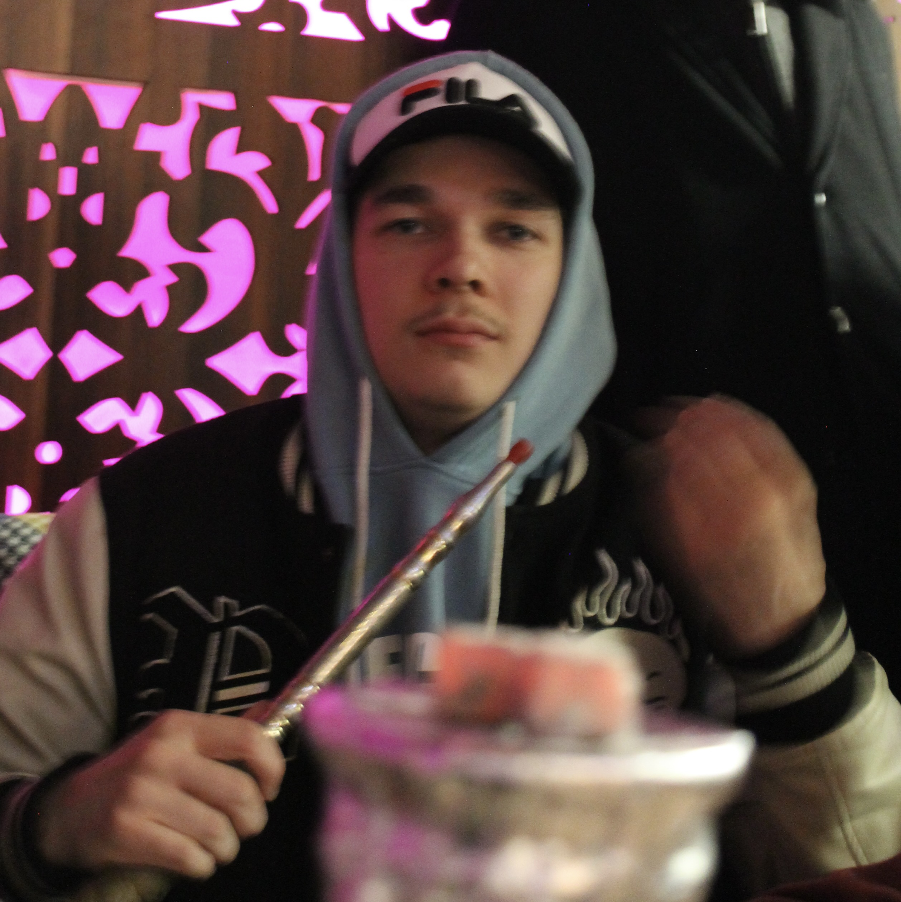

Päätoimittajalta
Joni Hammar
10.5.2023
Kirjoitettu
10.5.2023
Lukuaika
5min
Pikaraflaopas: ravintola Kirkuk
Itselleni Itäkeskus ei ole koskaan näyttäytynyt erityisen edukkaana paikkana. Kaikki kuitenkin muuttui kun ystäväni esitteli minulle Puhoksen ostarin.
Itäkeskuksen takana on vanha 60-lukuinen ostari Puhos, joka viehättää vanhalle ostarille tyypillisellä sielukkuudella ja yhteisöllisyydellä, jonka voi aistia ilmassa.
Kun ostaria lähestyy auringon laskettua, kiinnittää ensimmäisenä huomionsa siellä loistaviin valokyltteihin, jotka tuovat epäironisesti mieleen Las Vegasin. Valot sanovat Kirkuk, joka tuntuu olevan ostarin kohokohtia.
Puhoksessa huomaa ostarin olevan elävän, väkeä on kadulla ja miltei kaikki liiketilat ovat käytössä. Löytyy lihakauppaa, itämaista kauppaa, grilliä, partureita ja jopa matkatoimisto. Kävijöitä siis riittää.
Itse ravintola Kirkukissa on rento meininki, eksoottiset loosit ja hyvä sapuska. Kirsikkana kakun päällä on shisha Sali, jonne vetäytyessä ruuan jälkeen tee kupposelle voi tuntea henkisten ja fyysisten rasitteiden jäävän kauas taakse. Itämaisen musiikin säestäessä iltaa voi ravintolassa vierähtää pidempikin tovi. Kävijöille vapaat tammipelit eivät myöskään huononna kokemusta.
Vastenmielistä kyllä Helsingin kaupunki haluaa purkaa Puhoksen osittain ja remontoida jäljelle jäävän alkuperäisen osan. Käytännössä ostari vietäisiin maahanmuuttajilta hintatasolla ja kaupallistettaisiin keskiluokalle.
Suomen arkkitehtiliiton lehdessä, Safassa 26.10.2023 julkaistussa Silja Ylitalon artikkelissa ”Arkkitehti ja tutkija Hossam Hewidy halusi selvittää, mikä saa lähiöostarit kukoistamaan – ja miksi ne siitä huolimatta halutaan purkaa” Hosam Hewidy osoittaa syyksi Helsingin antisegrekaatiopolitiikan ja kertoo rakennussuunnitelman sivuuttavan monikulttuurisuuden, maahanmuuttajataustaiset yrittäjät ja monikulttuurisuuden.
”Kun vuokrat nousevat, alkuperäiset yrittäjät menettävät edulliset liiketilansa, jotka ovat mahdollistaneet pienituloselle asiakaskunnalle sopivat hinnat. Uusi kaupunkitila suunnitellaan miellyttämään maksukykyistä keskiluokkaa, ja pienituloiset joutuvat väistymään” Hewidy kertoo.
Itäkeskuksen takana on vanha 60-lukuinen ostari Puhos, joka viehättää vanhalle ostarille tyypillisellä sielukkuudella ja yhteisöllisyydellä, jonka voi aistia ilmassa.
Kun ostaria lähestyy auringon laskettua, kiinnittää ensimmäisenä huomionsa siellä loistaviin valokyltteihin, jotka tuovat epäironisesti mieleen Las Vegasin. Valot sanovat Kirkuk, joka tuntuu olevan ostarin kohokohtia.
Puhoksessa huomaa ostarin olevan elävän, väkeä on kadulla ja miltei kaikki liiketilat ovat käytössä. Löytyy lihakauppaa, itämaista kauppaa, grilliä, partureita ja jopa matkatoimisto. Kävijöitä siis riittää.
Itse ravintola Kirkukissa on rento meininki, eksoottiset loosit ja hyvä sapuska. Kirsikkana kakun päällä on shisha Sali, jonne vetäytyessä ruuan jälkeen tee kupposelle voi tuntea henkisten ja fyysisten rasitteiden jäävän kauas taakse. Itämaisen musiikin säestäessä iltaa voi ravintolassa vierähtää pidempikin tovi. Kävijöille vapaat tammipelit eivät myöskään huononna kokemusta.
"Alkuperäiset yrittäjät menettävät liiketilansa"
Vastenmielistä kyllä Helsingin kaupunki haluaa purkaa Puhoksen osittain ja remontoida jäljelle jäävän alkuperäisen osan. Käytännössä ostari vietäisiin maahanmuuttajilta hintatasolla ja kaupallistettaisiin keskiluokalle.
Suomen arkkitehtiliiton lehdessä, Safassa 26.10.2023 julkaistussa Silja Ylitalon artikkelissa ”Arkkitehti ja tutkija Hossam Hewidy halusi selvittää, mikä saa lähiöostarit kukoistamaan – ja miksi ne siitä huolimatta halutaan purkaa” Hosam Hewidy osoittaa syyksi Helsingin antisegrekaatiopolitiikan ja kertoo rakennussuunnitelman sivuuttavan monikulttuurisuuden, maahanmuuttajataustaiset yrittäjät ja monikulttuurisuuden.
”Kun vuokrat nousevat, alkuperäiset yrittäjät menettävät edulliset liiketilansa, jotka ovat mahdollistaneet pienituloselle asiakaskunnalle sopivat hinnat. Uusi kaupunkitila suunnitellaan miellyttämään maksukykyistä keskiluokkaa, ja pienituloiset joutuvat väistymään” Hewidy kertoo.

-Falafelin mukana tulee reilu leipä.

-Shisha sali on ravintolan helmi.